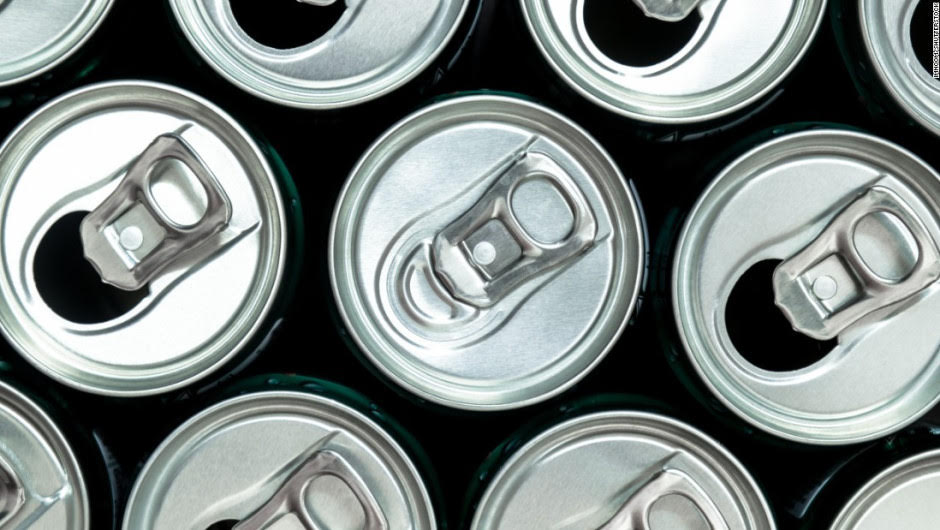

Noticias
Las bebidas energéticas pueden tener riesgos involuntarios en la salud
Las bebidas energéticas pueden prometer un impulso energético, pero los expertos están cada vez más preocupados de que el coctel de ingredientes que contienen puedan tener riesgos involuntarios para la salud. Un estudio publicado el miércoles en el Journal of American Heart Association encontró que las bebidas energéticas con cafeína alteraban la actividad eléctrica del corazón y aumentaban la presión arterial..
 Place The Order